Software-Defined Networking
Why Software-Defined Networking?
Previously, we saw how routing protocols can be adapted to work in datacenter contexts (e.g. equal-cost multi-path). What if we want to optimize our routing protocols even further for our specific network’s constraints and use cases? The standard routing protocols might no longer work.
In this section, we’ll explore software-defined networking, a totally new paradigm for thinking about routing and network management. In the context of routing, the SDN architecture involves having a centralized control center compute routes and distribute them to individual routers. We’ll see how SDN works in the context of datacenters and the wide-area network, and discuss benefits and drawbacks of this new approach.
Brief History of Software-Defined Networking
Although we’ll be looking at SDN as a new approach for specialized routing protocols, the SDN paradigm was originally designed in response to headaches at the management plane.
Recall that the management plane is critical for network operation. Routers can’t do anything unless someone configures them (e.g. assigns costs to links) and tells them what to do (e.g. what routing protocol to run). Also, we need routers to report errors to keep the network up and running. A lot of this management work has historically been done manually.
Even though the management plane is so important, there’s been relatively little focus on innovating it. At the control plane, we’ve see lots of different routing protocols, but the way we configure and control routers has evolved more slowly.
Over the Internet’s history, there’s been a slow evolution toward using scripts to programatically interact with the network. These scripts take jobs that the operator would manually do, and implement them in code (without much intelligence). For example, scripts allow automating the process of adding routers and links to the network. A script for repairing the network might say: if a router fails, check that it’s actually failed, reboot it, and if it’s still not fixed, report to the operator.
Despite the progress, these management systems have been the bottleneck for network operations for a long time. We still might have to wait for human intervention every time a new router is added.
In 2005, a paper by Albert Greenberg et. al. described the problem by saying: “Today’s data networks are surprisingly fragile and difficult to manage. We argue that the root of these problems lies in the complexity of the control and management planes.”
In response to these problems, researchers began thinking about different ways to run a network system. This led to more radical proposals that reimagined the fundamental design of routers.
The concepts we’ll see were first considered in 2003, though they didn’t gain much momentum at the time. Frustrations with network management accelerated the development of new management paradigms. By 2008, there was more momentum, leading to the OpenFlow switch interface (which we’ll see soon).
By 2011, it was evident the industry was moving in this new direction, and the Open Networking Foundation (ONF) was established by major network operators (Google, Yahoo, Verizon, Microsoft, Facebook) and vendors (Cisco, Juniper, HP, Dell). Nicira, the SDN-focused startup that developed the OpenFlow interface, was a $40 million startup in 2012.
Routers are Vertically Integrated and Standardized
If we wanted to reimagine the design of routers, how would that be implemented in practice? How do technologies on routers change over time?
If your network needs a router, you’d probably purchase one from a major equipment vendor like Cisco or Juniper. In order to ensure that routers are compatible with each other, all the major equipment vendors build their routers according to some pre-defined standards.
This business model can make innovation and experimentation with new approaches difficult. Suppose you had a new idea for a routing protocol. You would need to get the protocol approved by a standards body, which could take years. Then, you’d have to wait for the vendors to upgrade their manufacturing to conform to the new standard.
Standardization also makes routers less flexible for users implementing custom solutions. If you have a problem specific to your network, but no one else has this problem, your solution probably won’t be adopted by the standards body. Vendors want to make routers that satisfy everybody’s needs, and they won’t necessarily implement a solution that’s perfect for you, if nobody else wants it.
On the other hand, standardization also means that if others have a problem that you don’t, the router might come with a solution to their problem, even if you don’t need it. This can make routers unnecessarily complex for the purposes of your specific network.
Standardization also makes experimentation and research difficult. If you want to try a new idea to see if it works, you might not be able to buy routers that can implement your new idea. Vendors don’t want to build experimental products, intended for one specific customer, that might not even work.
Another major obstacle to innovation and experimentation is routers being vertically integrated. The router you buy already has the functionality for all three planes wired on the chips. There’s no modularity that would let you swap out just the control plane by itself.
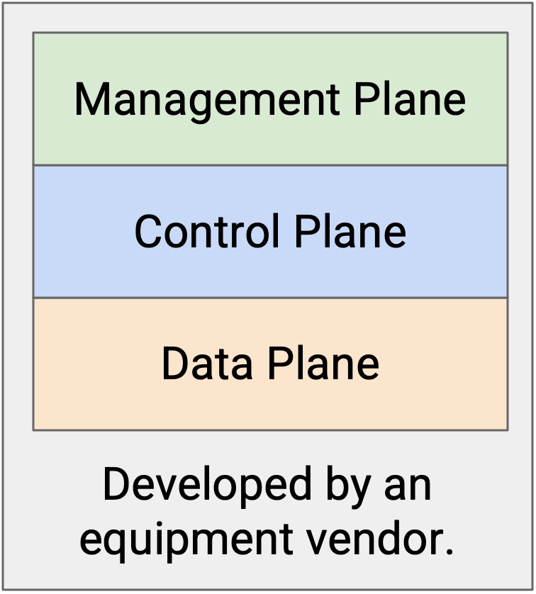
Innovating Routers
If we did want to innovate routers, what could we innovate at each plane, and what kinds of pre-existing standards would we be working with?
The data plane is standardized by IEEE (electrical engineering group) and requires everyone to strictly follow the standards. If two routers from different vendors are connected, we have to make sure both sides are sending bits along the physical wire in the same consistent format.
Data plane innovation is usually driven by the demand for higher-bandwidth routers, and new features are not often introduced. This development happens quite slowly, in 2-3 year increments, because we have to solve physical hardware problems and design chips for increased bandwidth. Since the core data plane features are relatively stable, router innovation is not really focused on the data plane, and it’s okay that the development cycle is slow.
The control plane is standardized by the IETF (the network group behind RFCs). Vendors sometimes add their own extensions, though the core features are mostly standardized. For example, we assume that every router (even if they’re from different routers) are following the same routing protocol.
Control plane innovation (e.g. new routing protocols) can take several years to be adopted. You might have to submit an RFC draft proposal, and the community may spend some time discussing the proposal before agreeing on its terms.
The management plane is also standardized by the IETF, though it’s much less standardized. Different operators can use different software to configure their routers, and we don’t really need different vendors to agree on some standardized software. Because this plane is only loosely standardized, many different approaches with different features exist.
In summary: The data plane is standardized (but we don’t really have new features in mind), the control plane is standardized (but we want to try new solutions), and the management plane is not really standardized.
Radical Idea: Disaggregating Routers
Standardization and vertical integration were making it difficult to innovate and experiment. This led to the radical idea of disaggregating routers by splitting the planes into different layers of abstraction. Instead of buying a single router with all three planes, we could now buy data and control plane functionality separately. This allows us to change layers independently from each other.
In order to connect the three layers, we need an API between the layers of abstraction. In a vertically-coupled router, we don’t care how the data plane and control plane talk to each other. However, if we buy the data plane separately, and we want to design our own custom control plane on top, we need an interface to interact with the data plane.
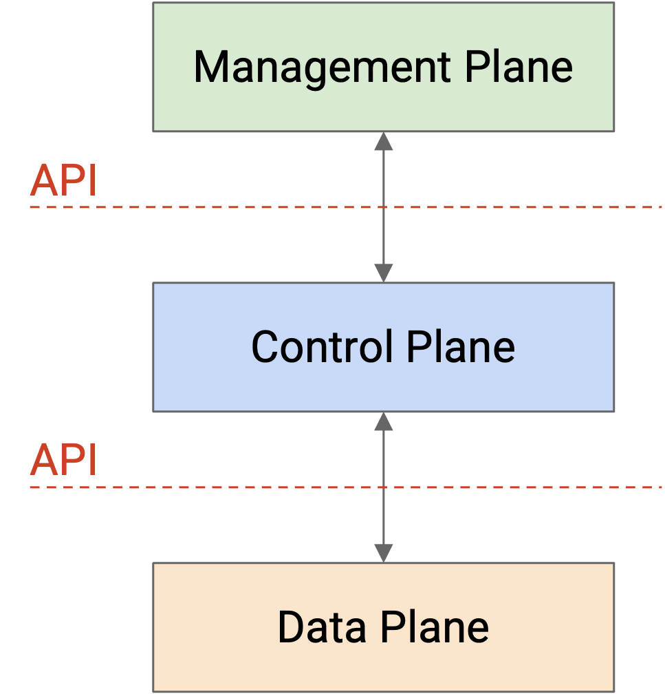
An even more radical idea is to stop thinking about the three planes in terms of only the router, and instead design a new system architecture that naturally splits up the data plane and control plane.
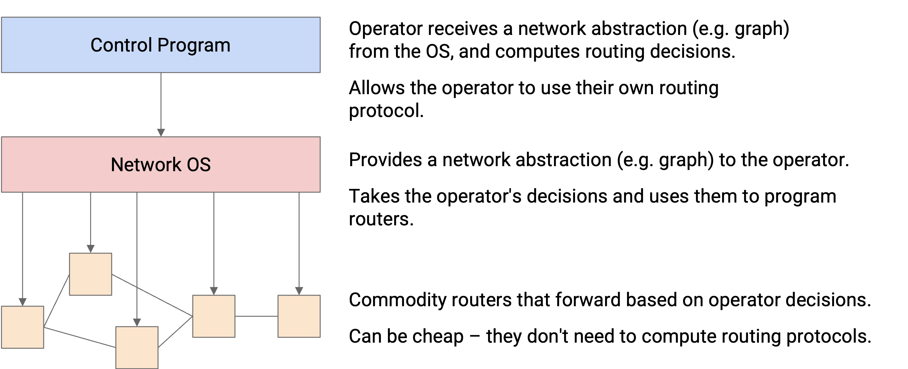
At the bottom, we have commodity network devices. You can think of these as buying just the data plane by itself. These routers receive instructions from the control program via the network OS, and simply forward packets according to those instructions. These routers don’t need to think about routing protocols at all, so they can be cheaper.
In the middle, we have the network OS. You can think of this as the API connecting the data plane routers and the control plane program. The network OS provides an abstraction of the routers (e.g. as a graph) that can be passed up to the control program. Then, the control program can send routing instructions to the network OS, without worrying about how to program specific routers. The network OS can take those instructions and program them onto individual routers.
At the top, we have the control program. You can think of this as buying or implementing the control plane by itself. Here, the operator receives an abstraction of the network (e.g. graph) from the network OS, and can use that to write their own custom routing protocol. Then, the resulting routes can be passed to the network OS, which will program them onto routers.
OpenFlow API Format
OpenFlow is an API for interacting with the data plane of a router. The operator writes their own fancy code, separate from the router, that computes routes through the network. Then, those routes can be programmed onto the forwarding chip.
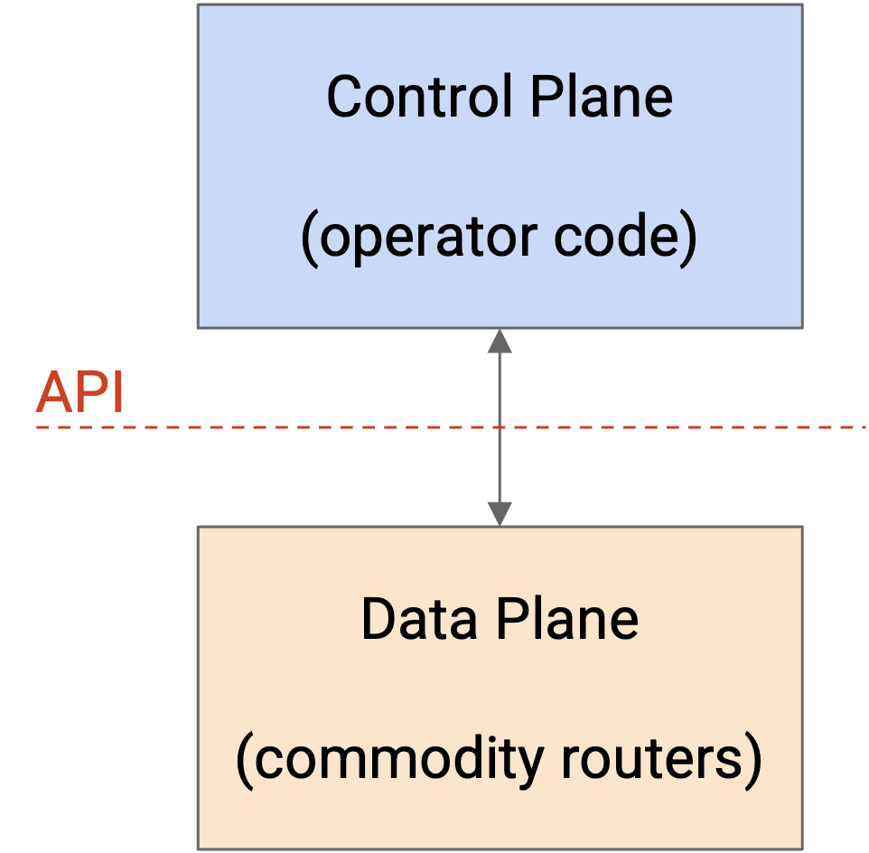
The OpenFlow paradigm is different from traditional routers, where the control plane is implemented in the router, and there’s no clear API for programming custom routes onto the forwarding chip.
The OpenFlow API defines a flow table abstraction to describe routes and forwarding rules. The operator code can output any rules and routes it wants, and install them on the router, as long as they’re in the flow table format.
The basic building block of the API is a flow table, which you can think of as a generalized version of a forwarding table. Each flow table consists of key-value pairs, just like a forwarding table. The key specifies what to match the packet against. This could be a destination prefix, an exact destination, a 5-tuple, or other relatively simple matches. The corresponding value specifies what action to set when a packet matches. The action could be sending the packet to a next hop (like a forwarding table), but could also specify fancier actions like adding an extra header.
The output format is a sequence of one or more numbered flow tables, where each table has its own different match-action entries. These flow tables can then be programmed onto the forwarding chip.
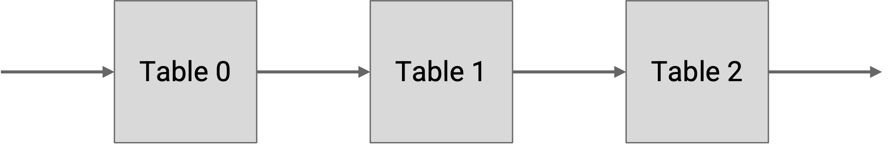
When a packet arrives at a router, it is checked against each table in order (e.g. Table 0, Table 1, Table 2, etc.), and when there’s a match, we write down the corresponding action (without executing it yet). Eventually, once the packet is checked against the final table, any action(s) we wrote down are applied to the packet.
There are also special actions for skipping to later tables, which we can use in rules like: If the source port matches this number, skip to table 5 to set additional actions.
The operator can run any code they want to generate flow tables, and the flow tables can be more general than a destination/next-hop forwarding table. However, the rules (match/action pairs) that we generate are still constrained by the specialized forwarding chip hardware. The forwarding chip is optimized for speed, and probably can’t handle complex match rules like “if the TCP payload is in English, set this action.”
As a result, the flow tables we see in practice end up looking pretty similar to the tables we’ve already seen. Common match rules include longest prefix matching on IP destinations, 5-tuples to identify flows, and exact matches on encapsulation headers (e.g. MPLS).
If the forwarding rules aren’t so different, why use OpenFlow at all? Remember, the main advantage is that it gives the operator total freedom at the control plane. We’re not limited to distance-vector or link-state protocols anymore.
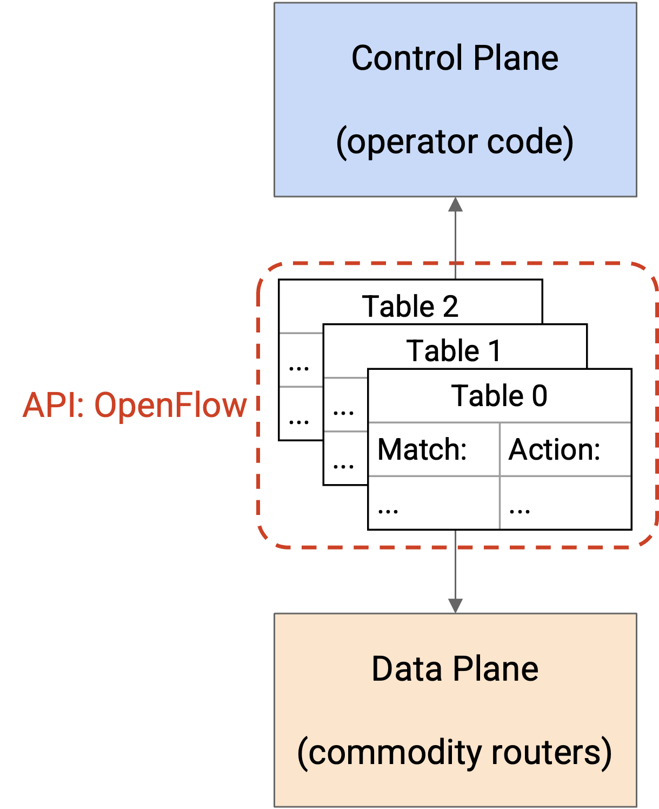
Benefits of a Flexible Control Plane
Our new architecture gives the operator flexibility to implement their new routing protocol at the control plane. What are some benefits of this approach?
The operator can implement custom routing protocols best-suited for the operator’s specific needs. The operator is no longer constrained by standards bodies and vendors.
Flexibility also gives us an opportunity to simplify. For example, if the standardized protocol includes features we don’t need, we don’t have to implement them in our custom solution. Simpler protocols can have less code and simpler code, which might allow for easier development and maintenance of that protocol.
Finally, a flexible control plane enables centralized computation of routes at the control program, instead of distributed across multiple routers. Centralization comes with several benefits as well.
Centralization can result in more intelligent routing decisions that lead to excellent performance. In a 2013 report from Google, engineers who deployed an SDN architecture noted that “centralized traffic engineering service drives links to near 100% utilization, while splitting application flows among multiple paths to balance capacity against application priority/demands.” A 2013 paper from Microsoft describes using an OpenFlow controller to “achieve high utilization with software-driven WAN.”
More intelligent routing decisions can help optimize other criteria besides performance, that a standard routing protocol can’t easily optimize. For example, a US government network might implement a geofencing rule that says, don’t send traffic via links that are in Canada. Or, a broadcast TV network might want to optimize for path diversity to increase reliability. We can enforce that two flows travel via paths that don’t share any links, so that if a link goes down, only one of the flows is affected. The two paths can serve as backups for each other.
Centralization can also make it easier for routing protocols to converge. In a distributed protocol, if the network changed, the routers have to coordinate to converge on a new routing state. In this centralized model, if a link fails, that router could tell the boss, and the boss could recompute routes and install the new routes on the routers.
Traffic Engineering
A flexible control plane allows us to perform traffic engineering, which means we can route traffic in a more intelligent and efficient way than a standard distributed routing protocol could.
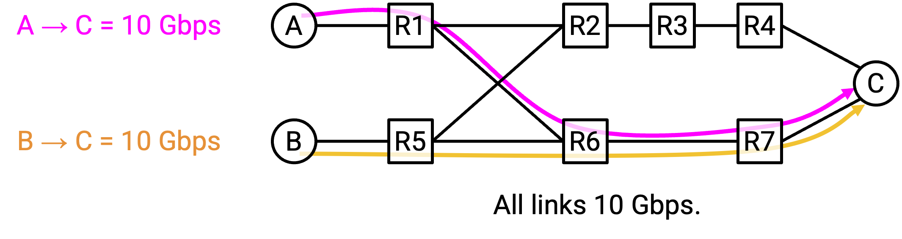
Suppose there are two connections, S1-D at 10 Gbps and S2-D at 10 Gbps. If we just ran standard least-cost routing, both flows would send traffic along the bottom path. The bottom path would be congested (20 Gbps on 10 Gbps link), while the top path’s bandwidth is sitting there unused.
With a more intelligent routing scheme, we could send S1-D traffic along the top path, and S2-D traffic along the bottom path. Using traffic engineering, we’ve forced some packets to take a longer route, in order to better utilize the bandwidth in the network.
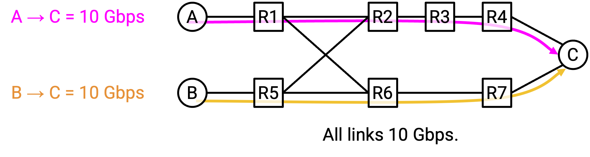
To compute these routes, we can modify least-cost routing, and instead enforce that traffic should be on the shortest path that has sufficient capacity. We can also enforce other constraints instead of capacity, such as latency. The resulting algorithm is called constrained Shortest Path First (cSPF).
Now, suppose that S1-D needs 12 Gbps, and S2-D needs 8 Gbps. cSPF will send the flows along different paths to maximize bandwidth, but S1-D is sending 12 Gbps over a 10 Gbps link.
To fix this, our traffic engineering can be even more intelligent, and split traffic in a flow across different paths. S1-D can send 10 Gbps of its traffic along the top path, and the remaining 2 Gbps along the bottom path.
Again, our traffic engineering allowed us to implement custom logic that resulted in better utilization of the network capacity.
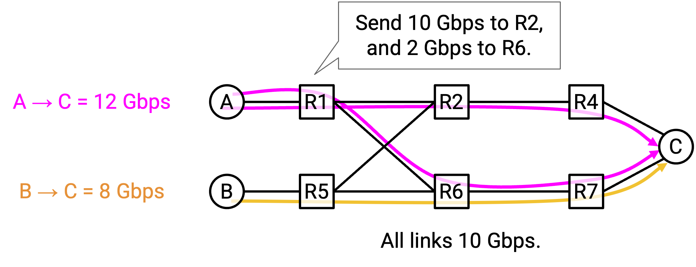
How do we actually implement split paths through the network, using the OpenFlow API from earlier? Remember, our routing decisions should still follow simple rules that forwarding tables can understand.
One approach is to use encapsulation. At the sender, we can add rules to add an extra header, where some packets get label 0, and the rest get label 1. This label tells us which path to send the traffic along.
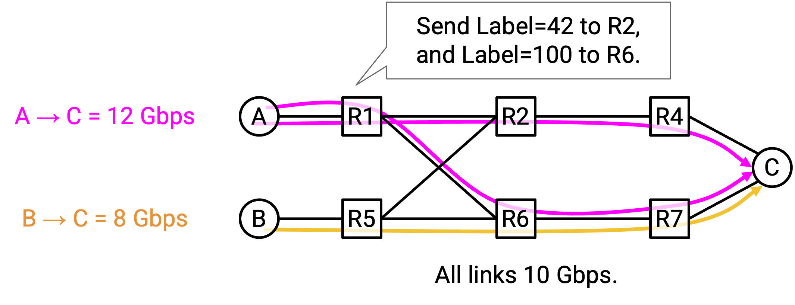
Now, at R1, we can add simple rules to route label 0 packets upwards to R2, and label 1 packets downwards to R3. This idea can be applied in addition to the other rules we had for constrained least-cost routing (e.g. the flow tables might have other entries for other destinations or other flows).
Centralized Traffic Engineering and Globally Optimal Decisions
One major difference in the SDN model of custom routing protocols is centralization. In the original model, every router was running its own routing protocol. Now, we can have a single computer outside of the routers compute all the routes, and then use the flow table API to install those routes on the routers.
Centralization allows us to make globally optimal decisions. In a distributed protocol, each router is making the best decision for itself, but that might not be the best decision for other routers. In the centralized model, the boss can use its global view of the network to decide what’s best for everybody, and tell the routers to follow that decision.
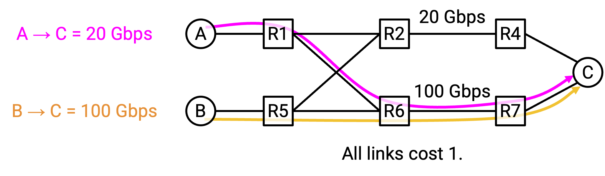
Consider this network with two flows, S1-D at 20 Gbps, and S2-D at 100 Gbps. Assume we haven’t implemented support for splitting a flow onto multiple paths.
Suppose the 20 Gbps S1-D flow starts first. Using constrained shortest path first, S1 could choose to use the bottom path. From the perspective of S1, this is a locally optimal decision (top and bottom paths both equally good).
Later, the 100 Gbps S2-D flow starts. Now, using constrained shortest path first, S2-D doesn’t have any single path that meets its demands. The top path (20 Gbps) and bottom path (80 Gbps) both have insufficient capacity.
The key problem here is, each individual router made its own decision independently, without coordination.
By introducing a centralized controller, the controller can look at the overall network structure and the demands of each flow, and assign paths to each flow more intelligently. The resulting decision is globally optimal, and increases network efficiency.
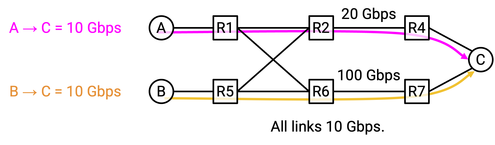
Centralized traffic engineering can make even more intelligent routing decisions, depending on what the operator wants to optimize. For example, we could classify flows as high-priority or low-priority, and make decisions that optimize both network utilization and the needs of different applications.
SDN in Datacenter Overlay
In the previous section, we saw that virtual switches can apply encapsulation to connect the overlay and underlay networks. Given a virtual address, we can add a header with the corresponding physical address, which allows the packet to be sent along the underlay network. But, how do we know the mapping between virtual addresses and physical addresses?
We also saw that encapsulation can be used to to support multiple tenants in a single datacenter, each running their own private network. Switches can add headers with a virtual network ID. But, how do we know which virtual network ID to use?
A centralized SDN controller can be used in the datacenter to solve these problems. Each tenant can operate its own controller. When a new VM is created, the SDN learns about its virtual and physical addresses. Then, the SDN can update the forwarding tables in the other virtual switches, adding encapsulation rules with the new virtual/physical address mapping.
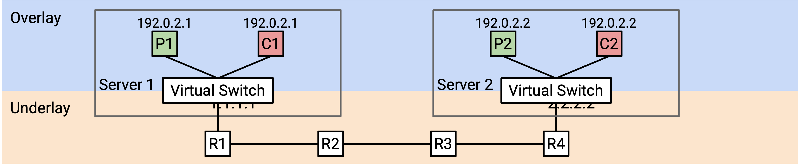
For example, suppose Coke VM 2 is created with virtual IP 192.0.2.1 and physical IP 2.2.2.2. The SDN knows Coke VM 1 lives on physical server 1.1.1.1, so it can go to the virtual switch on 1.1.1.1 and add an encapsulation rule for the new Coke VM 2.
The flow table at 1.1.1.1 might say: If you receive a packet with destination 192.0.2.1, add a header with Coke’s virtual network ID of 42. Also, add a header with the corresponding physical address 2.2.2.2. Then, send the packet along the underlay network.
Benefits of SDN in Datacenter Overlay
Why might we use a centralized SDN architecture to support virtualization and multi-tenancy in datacenters, instead of a more standard routing protocol?
The centralized SDN architecture allows us to cleanly split the overlay and underlay networks into two scalable layers. In a traditional architecture, the routers in the underlay network would have to process the custom encapsulation headers (e.g. virtual network IDs). SDN allows the underlay network to remain simple, without thinking about virtualization or multi-tenancy.
Centralization gives us a simple way to implement the control plane at end hosts, without any complicated routing protocols. The controller learns about a new host and updates the other hosts accordingly. Without a centralized controller, we might need some complex distributed scheme to figure out which encapsulation headers to add.
This SDN architecture also shows us why overlay networks can scale well. The SDN controller for a tenant only needs to know about the VMs belonging to that specific tenant. By contrast, if we used a traditional architecture, a new Coke VM might have to be advertised to all the other VMs, even Pepsi VMs.
SDN in Datacenter Underlay
The datacenter underlay is a physical network, just like any other network, although with a special topology. Many general-purpose network challenges, like achieving high utilization of links, also apply to datacenter underlay networks. That means we can apply SDN to the underlay network as well.
SDN at the underlay network can help us efficiently route packets through the datacenter. For example, the operator might want to send mice flows along links with small delay, and elephant flows along links with high bandwidth.
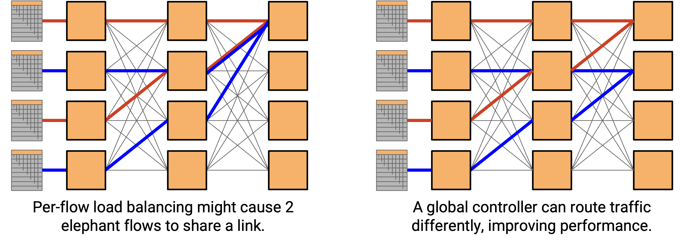
In our underlay Clos network, per-flow load balancing (hash 5-tuple to choose a path) could still send multiple elephant flows along the same path. Even if two elephant flows used different paths, the paths might share links, and those links might become congested. An SDN controller could solve this problem by coordinating the flows and placing them onto non-overlapping paths.
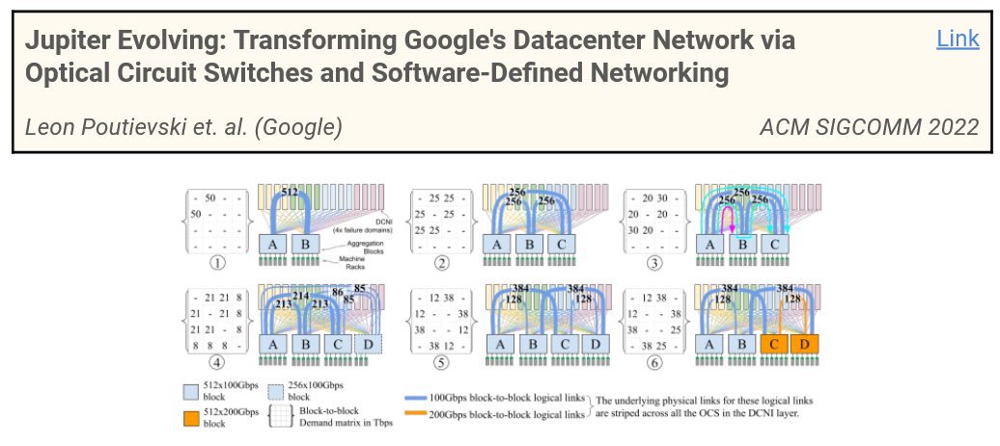
This 2022 Google paper describes eliminating layers in the Clos network (fewer links, cheaper datacenter) by using SDN to route traffic more intelligently.
Hyperscale datacenters often use SDN in both the overlay and underlay networks. These are usually implemented as decoupled systems. There’s one SDN thinking about the underlay, and a separate SDN thinking about the overlay.
SDN in Wide Area Networks
In addition to datacenters, SDN can be useful in general wide-area networks, especially when efficient utilization of bandwidth is critical. For example, in the traffic engineering example from earlier, imagine if our 10 Gbps links were undersea cables. There’s no cheap way to add additional bandwidth, so optimizations have to instead focus on efficient utilization of the bandwidth we do have.
Drawbacks of Centralized Control
Centralization doesn’t come for free, and has some drawbacks.
One drawback is reliability. In a traditional network, if a router fails, the routing protocol converges around the failure. The other routers can reroute traffic along other paths. By contrast, if the central controller fails, we don’t have a way to update the network anymore, and the routers don’t know how to adjust to changes.
Note: We’ve drawn the centralized controller as a single entity, but it doesn’t need to be run on a single server. The control plane computation could happen across multiple servers, where those servers coordinate to operate in a logically centralized way. This is different from the original model, where routers coordinated but still made their own distributed decisions. This helps to avoid having a single point of failure in hardware, though the controller as a logical unit could still fail (e.g. bug in the code).
Centralization also introduces scalability problems. The controller has to make decisions for everybody, which can get expensive for large networks. By contrast, in a traditional network, each router only has to perform computations for itself.
Centralization could also introduce different types of complexity. In a traditional network, we could buy a router and connect it, and it more or less starts working right away. With a central controller, we have additional infrastructure challenges. Where do we put this controller? How do we connect it to the individual routers in a reliable way?
This is an active area of research, including a project by Sylvia Ratnasamy and Rob Shakir (Berkeley CS 168 instructors).
SDN in the Management and Data Plane
We’ve seen SDN as a new way to implement the control plane. But, the initial frustration that led to the development of SDN was at the management plane.
It turns out, many of the design paradigms that SDN used at the control plane can also apply to the management plane. For example, we saw that SDN relies on well-defined, programmatic APIs (e.g. OpenFlow).
TODO ran out of time in SP24.